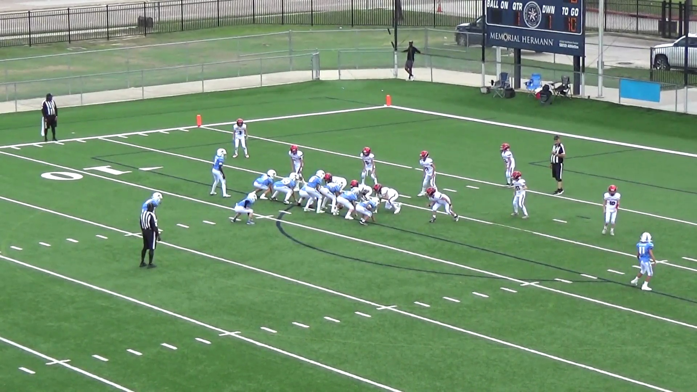
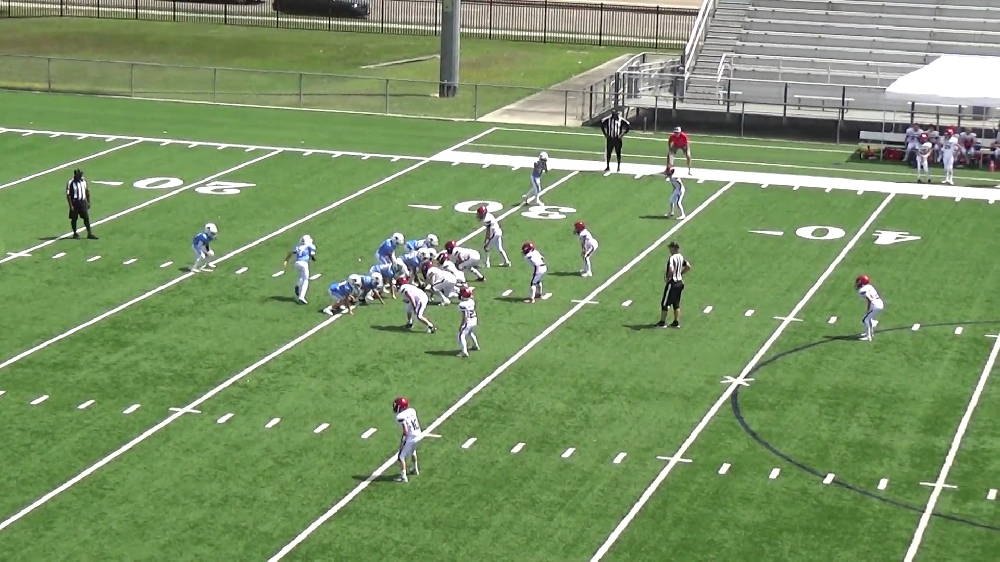
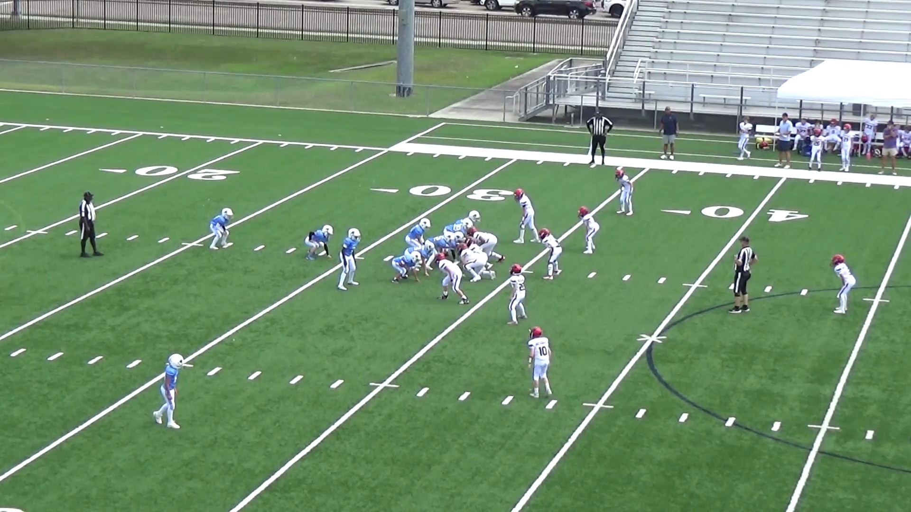
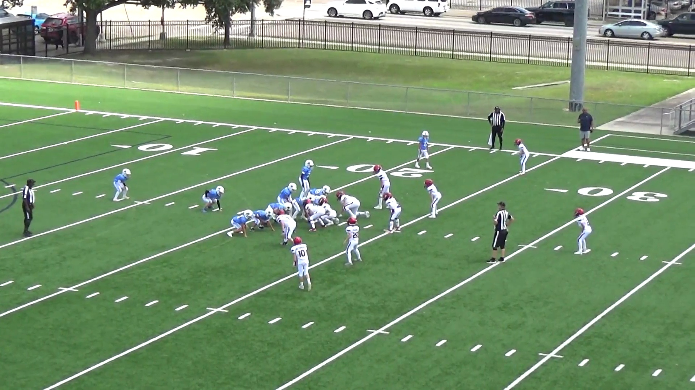
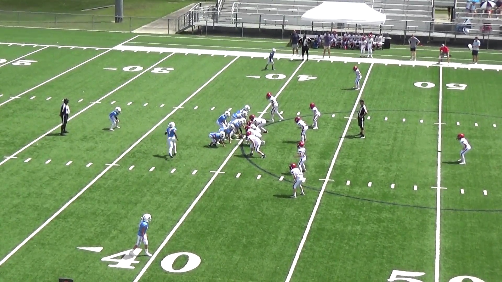
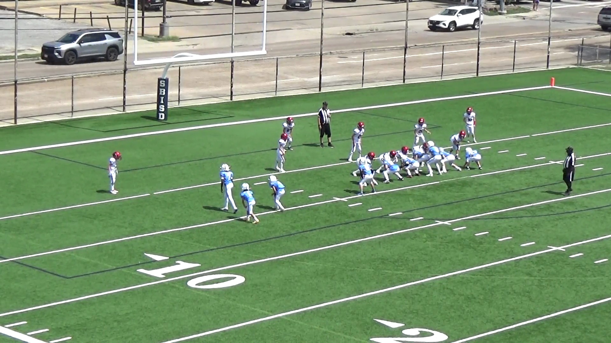
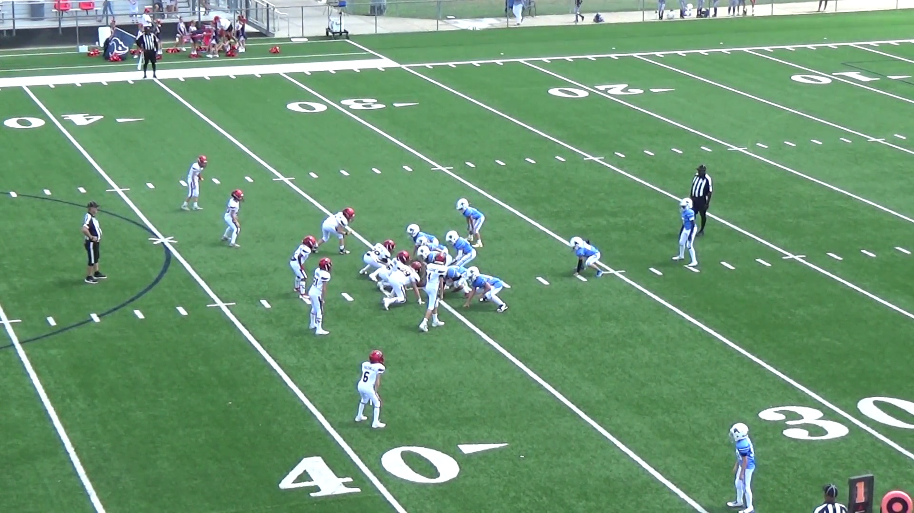
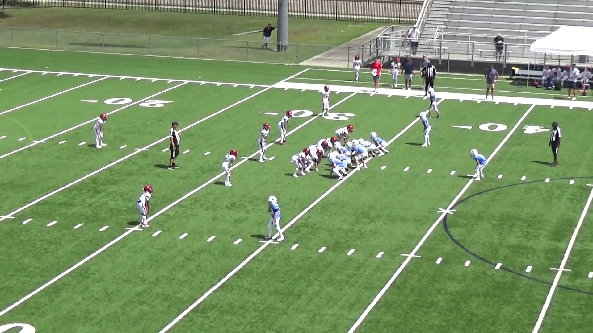
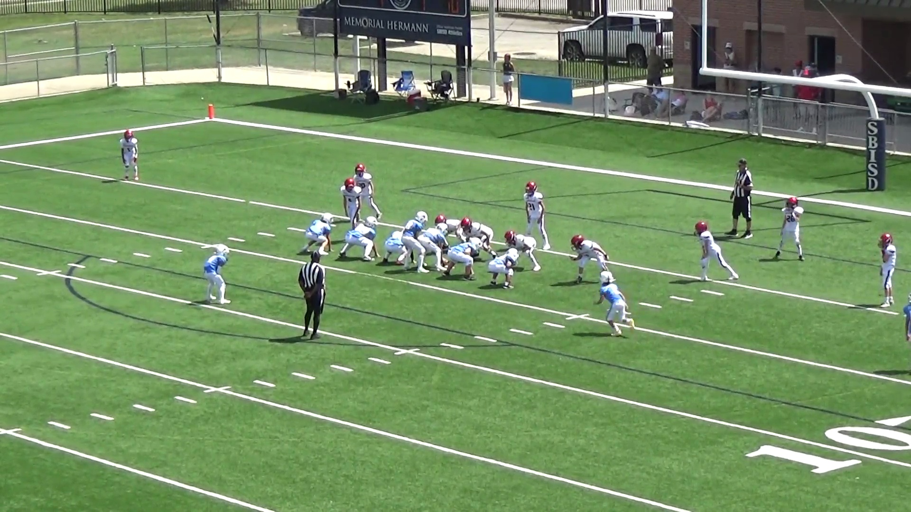

Back to player scouting report
Raiders
Opponent film study · vs Green Wave · September 19, 2026
Green Wave Offense Scouting Card
Texans film, September 12. Based on your manual chart and notes, with assistant pre-snap field-position review. Prepared for September 19 in the same format as the Oilers card.
What coaches should know
- FB in the game = run with his lead. Mr. Wang confirmed from film that every play with a FB was a run, and the run always went with the FB as lead blocker. Make his first steps a primary linebacker key.
- Under center, run first. Your observation is no shotgun. Runs account for 29 of 34 identifiable calls; excluding extra points, 28 of 31.
- The hash is a wide-run alert. In the augmented sample, 13 of 25 identifiable near-hash calls were wide opposite: eight tosses and five QB runs. Nine were iso/off tackle and three were passes. The six between-hash scrimmage calls were all iso/off tackle. Additional hash spots are visual estimates.
- Single back only: watch the bootleg. All four charted bootlegs (4, 39, 60 and 66) are in corrected single-back group C. With a FB in, read his lead toward the run; the bootleg is not the alert.
- The strong-side lean exists across the field. 17 of 25 classifiable scrimmage runs went strong: 6 of 8 inside the 10 and 11 of 17 elsewhere. Group E is the clearest signal (12 of 14 strong), while Groups B and D go weak. Four inside-10 strong runs were in one sequence.
- The TE/wing look can send the run away. Group B has three runs away from the overload; Group D has three runs away from the WB, toward the TE.
Rules for players
- Find the extra tight end. Know the overload and communicate when it moves.
- Set the edge and pursue. Watch for toss toward the longer side of the field.
- Single back: do your QB job after the fake. With no FB, do not let everyone chase the running back. With a FB, read his lead toward the run.
- Keep your weak-side gap. They can run away from the overload, even near the goal line.
- Account for the tight end on passes. Their charted throws are short, including rollout passes.
Who gets the ball
| Player | What your chart shows | Film |
|---|---|---|
| #4 | Primary named HB: toss, iso and off tackle. | Watch 11 · Watch 56 |
| #8 | Primary named QB: keepers and short passes. | Watch 39 · Watch 62 |
| #1 | Receiving target at WR/TE and jet-sweep runner. | Watch 62 · Watch 68 |
| #7 | Charted as TE on 5, HB on 41 and QB on 42. Verify the number/role before treating it as fixed. | Watch 5 · Watch 41 · Watch 42 |
These are charted roles, not a verified roster. Incomplete-pass targets are not counted as touches.
Formation cards
Grouped by your formation letters with reviewed corrections: plays 60 and 66 are single back, with no FB. Most frequent first. Cards are illustrative: five core linemen and only the skill positions named in your chart. They are not complete eleven-player reconstructions or measured spacing. Solid green arrows show selected call concepts, not tracked paths; the tables retain every call and motion description. The unmirrored film frames show the actual alignment.
I formation · two-TE overload, WR opposite
Base power set. Six tosses, six strong-side iso/off-tackle calls, two weak-side isos plus one broken play. Mirrors left and right; schematic shows the overload right.
{kind=link}

15 entries · 14 run · 1 broken play
| Play | Set / motion | What they ran | Result | Film |
|---|---|---|---|---|
| 11 | I formation, 2 TE Overload Right, WR Left | HB (#4) Toss Right | 75 yards | Watch 11 |
| 17 | I formation, 2 TE Overload Left, WR Right | HB (#4) Iso Left | 3 yards | Watch 17 |
| 18 | I formation, 2 TE Overload Left, WR Right | HB (#4) Iso Left | no gain | Watch 18 |
| 20 | I formation, 2 TE Overload Right, WR Left | HB (#4) Iso Right | 1 yard | Watch 20 |
| 21 | I formation, 2 TE Overload Right, WR Left | HB (#4) Iso Right | 2 yards TD | Watch 21 |
| 27 | I formation, 2 TE Overload Right, WR Left | HB (#4) Toss Right | 3 yards | Watch 27 |
| 29 | I formation, 2 TE Overload Right, WR Left | HB (#4) Iso Left | 5 yards TD | Watch 29 |
| 41 | I formation, 2 TE Overload Left, WR Right | HB (#7) Toss Left | -5 yards | Watch 41 |
| 55 | I formation, 2 TE Overload Right, WR Left | broken play | — | Watch 55 |
| 56 | I formation, 2 TE Overload Right, WR Left | HB (#4) Toss Right | 10 yards | Watch 56 |
| 59 | I formation, 2 TE Overload Left, WR Right | HD (#4) Toss Left | no gain | Watch 59 |
| 61 | I formation, 2 TE Overload Right, WR Left | HB (#4) Iso Left | Fumble, -2 yards | Watch 61 |
| 63 | I formation, 2 TE Overload Right, WR Left | HB (#4) off tackle right | 5 yards | Watch 63 |
| 64 | I formation, 2 TE Overload Left, WR Right | HB (#4) off tackle left | 7 yards | Watch 64 |
| 65 | I formation, 2 TE Overload Left, WR Right | HB (#4) toss left | no gain | Watch 65 |
Single back · two TEs
Mixed run/pass family: four QB keepers and three short passes, plus a false start, fumbled snap and broken play. TE motion appears in several entries; do not assume the motion gets the ball.
{kind=link}

10 entries · 1 false start · 4 run · 3 pass · 1 fumbled snap · 1 broken play
| Play | Set / motion | What they ran | Result | Film |
|---|---|---|---|---|
| 3 | Single Back, 2 TE Overload Right, TE Motion left | false start | — | Watch 3 |
| 4 | Single Back, 2 TE Overload Right, TE Motion left | PA Left, QB (#8) run right | 5 yards | Watch 4 |
| 5 | Single Back, 2 TE Overload Right | PA Left, QB (#8) pass short right to TE (#7) | incomplete | Watch 5 |
| 12 | Single Back, 2 TE Overload left, TE Motion right | — | fumbled snap | Watch 12 |
| 28 | Single Back, 2 TE Overload left, TE Motion right | broken play | 40 yards | Watch 28 |
| 39 | Single Back, 2 TE left, TE Motion right | PA Right, QB (#8) run Left | 20 yards | Watch 39 |
| 42 | Single Back, 2 TE right | QB (#7) short pass right to TE (#1) | incomplete | Watch 42 |
| 60 | Single back, two TEs; no FB | QB (#8) PA Left, Run Right | 25 yards | Watch 60 |
| 62 | Single Back, 2 TE left | QB (#8) short pass left to TE (#1) | 10 yards | Watch 62 |
| 66 | Single back, two TEs; no FB | QB (#8) PA Left, Run Right | no gain | Watch 66 |
I formation · overload and WR on the same side
All three calls were HB off tackle to the weak side. This is an exception to simply running toward the overload.
{kind=link}

I formation · TE and wingback
All three runs go away from the WB toward the opposite-side TE. WB is 3 yards deep, with a WR wide on that side.
{kind=link}

Single back · TE left, slot motion left
Both Group A plays were HB toss left after slot motion. Play 68 has a similar written formation description but a jet sweep; it remains ungrouped as in your chart.
{kind=link}

Trips left · TE overload left
Two extra-point attempts, both rollout-left short passes and both incomplete. Schematic shows the rollout, not an uncharted receiver route.
{kind=link}

I formation · wing right, twin WR left
One charted QB run right for no gain. One example is not enough to make a formation rule.
{kind=link}

Ungrouped · single back, TE and slot right
HB off tackle right for 3 yards. No formation letter supplied.
{kind=link}

Ungrouped · single back, slot motion left
Extra-point jet sweep to WR #1 left, −3 yards. No formation letter supplied.
{kind=link}

Hash position and wide runs to the long side
Wide opposite on 13 of 25 identifiable near-hash calls (52%). Among runs alone, that is 13 of 22 (59%). The augmented chart adds the near-hash plays that did not fit the theory, rather than counting only your original 13 explicit examples.
| Call | Near hash | Between hashes |
|---|---|---|
| Wide toss opposite hash | 8 | 0 |
| Wide QB run opposite hash | 5 | 0 |
| Iso / off tackle | 9 | 6 |
| Pass | 3 | 0 |
| Total identifiable scrimmage calls | 25 | 6 |
All eight tosses and all five explicitly charted wide QB runs started near a hash. All 13 went toward the longer side in your notes: right hash → left on 1, 39, 41, 53, 59, 65; left hash → right on 4, 11, 27, 40, 56, 60, 66. That supports using the hash as a perimeter alert, but the offense still ran inside/off tackle on more than a third of near-hash calls.
Group E narrows the menu: 6 of its 11 identifiable near-hash calls were wide opposite (all tosses); the other five were iso/off tackle. Near-hash Group C mixed four wide QB runs with three short passes.
These figures describe the Texans augmented chart, not an independent recheck of the hypothesis. The 13 wide/opposite cases use your own hash notes, while additional spots are prior assistant estimates. Left/right remains unresolved on the nine other runs and three passes, so we cannot say whether those calls went toward the field or boundary. “Other run” means charted iso/off tackle, not a measured track width. All six between-hash comparison plays are a small sample. Excluded: false start 3, fumbled snap 12, broken plays 28/55, uncharted 16, and extra points 22/30/68. · Placement evidence
Inside the 10: strong-side check
6 strong / 2 weak among 8 classifiable scrimmage runs. I screened the pre-snap images of all 39 currently labeled Texans offensive clips, comparing the center/LOS with the goal line and the football 5- and 10-yard lines. Spot bands are visual estimates, not exact surveyed yardage. This supports a lean, not a guarantee or proof that location causes the play choice.
| Play | Pre-snap spot | Charted call | Run side | Counted? | Evidence |
|---|---|---|---|---|---|
| 12 | Inside 10; near the 5 | — | — | Excluded | Pre-snap frame |
| 16 | Inside 10; near the 5 | — | — | Excluded | Pre-snap frame |
| 17 | Inside 10; near the 5 | HB (#4) Iso Left | Strong | Included | Pre-snap frame |
| 18 | Inside 5; near goal line | HB (#4) Iso Left | Strong | Included | Pre-snap frame |
| 20 | Inside 5; near goal line | HB (#4) Iso Right | Strong | Included | Pre-snap frame |
| 21 | Inside 5; near goal line | HB (#4) Iso Right | Strong | Included | Pre-snap frame |
| 29 | Inside 10; near the 5 | HB (#4) Iso Left | Weak | Included | Pre-snap frame |
| 65 | Inside 10; near the 5 | HB (#4) toss left | Strong | Included | Pre-snap frame |
| 66 | Inside 10; near the 5 | QB (#8) PA Left, Run Right | Strong | Included | Pre-snap frame |
| 67 | Inside 10; near the 5 | HB (#4) Off tackle right | Weak (inferred from TE/wing left, run right) | Included | Pre-snap frame |
| 22 | Extra point; excluded from scrimmage-run comparison | QB (#8) Rollout Left, Pass short | — | Excluded | Pre-snap frame |
| 30 | Extra point; excluded from scrimmage-run comparison | QB (#8) Rollout Left, Pass Short to WR (#1) | — | Excluded | Pre-snap frame |
| 68 | Extra point; excluded from scrimmage-run comparison | Jet sweep to WR (#1) left | Strong | Excluded | Pre-snap frame |
| 64 | Beyond the 10, between 10 and 15 | HB (#4) off tackle left | Strong | Excluded | Pre-snap frame |
{kind=link}
{kind=link}
{kind=link}
{kind=link}
{kind=link}
{kind=link}
{kind=link}
{kind=link}
{kind=link}
{kind=link}
{kind=link}
Strength follows your chart. Play 67 is the additional weak-side inference: TE/wingback left, run right. Play 12’s fumbled snap and uncharted 16 have no usable intended-direction label. Extra points 22, 30 and 68 are separate. Play 64 is outside the 10. Four of the six strong runs are consecutive goal-line calls (17, 18, 20, 21), so the sample spans fewer independent situations than eight plays suggest. Cowboys film is not included.
Strong-side runs across the field
| Field zone | Strong | Weak | Strong share |
|---|---|---|---|
| Inside opponent’s 10 | 6 | 2 | 75% |
| Elsewhere | 11 | 6 | 65% |
| All classifiable scrimmage runs | 17 | 8 | 68% |
It is an overall lean, not only a goal-line tendency. The difference between 75% and 65% is too small a sample to establish a reliable increase near the goal. Formation is more informative here: Group E ran strong on 12 of 14 calls (86%), while Groups B and D each ran weak on all three calls. Within corrected Group E, strong-side counts are 5 of 6 inside the 10 and 7 of 8 elsewhere.
Excludes extra points, the false start, fumbled snap, broken plays and uncharted 16. Three otherwise identifiable runs (4, 39, 40) have no strong/weak label and are excluded from the percentages. Play 67’s weak label is inferred from TE/wing left and run right; all other labels are yours. Using only your explicit labels gives 17/24 overall, 6/7 inside and 11/17 elsewhere. Strength uses your chart convention, not a new count after motion.
Player quiz
1. They fake to the HB left. Can everyone chase left?
Show answer
No. Keep the assigned QB defender responsible for a keeper right. Examples: plays 4, 60 and 66.2. Ball on the right hash. Which wide run should you prepare for?
Show answer
A wide run left, toward the longer side. Your chart has six explicit examples. Keep your own assignment; this is a tendency, not a certainty.3. Inside the 10, can we ignore the weak side?
Show answer
No. Six of eight classifiable runs went strong, but 29 and 67 went weak and are charted touchdowns.4. Does TE overload always mean a run to the overload?
Show answer
No. Group B ran weak-side off tackle on all three charted calls.Chart and evidence
Ball placement for every reviewed offensive clip · Complete chart, prior-label differences and full scouting notes ·